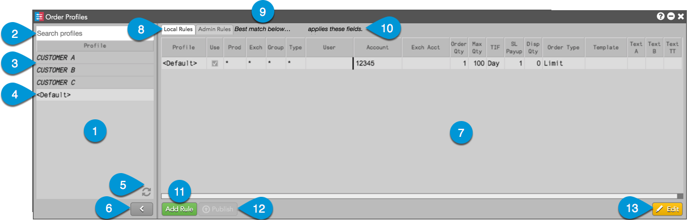
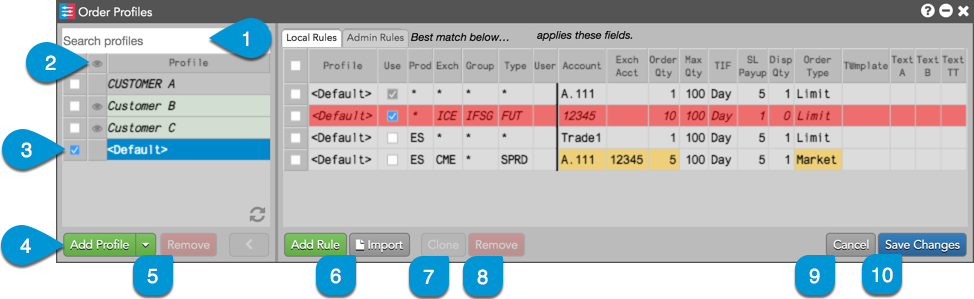

The Order Profiles widget consists of the following components:

The components are:
- Profiles panel — Displays Order Profiles available for trading.
- Search — Allows you to search and filter the list of profiles.
- Setup profiles — Order Profiles configured in the Setup application are displayed with a shaded background and italics. These profiles can be selected and applied to orders, and rules can be added in "edit" mode, but the profile settings are grayed out and cannot be changed.
- Custom profiles — Custom profiles created in Order Profiles are displayed with a
light background. These profiles can be applied to orders and edited in Order Profiles.
- Refresh button — Updates and applies changes to profiles configured in Setup by your administrator.
- Show/Hide button — Shows/hides the Rules Panel.
- Rules panel — Displays rules available per profile.
- Local and Admin Rules tabs — The Local tab shows rules added or uploaded locally to an Order Profile in Trade. The Admin Rules tab shows rules added to an Order Profile as Order Tag Defaults in Setup. The rules on this tab cannot be edited.
- Key field columns — Provides key fields for selecting order defaults. Best match rules are selected by the Trade application based on the key field columns: Prod, Exch, Group, and Type. The Use column indicates if the rule is available for order entry. Uncheck this column to deactivate the rule.
- Variable field columns — Provides variable fields to apply to an order based on a best match of the key fields. When a best match rule is found, values in the following variable field columns are applied to the order.
- Add Rule button — Adds a new rule to the rules panel. Double-click the cell in each column to add a new value for the rule.
- Publish button — Broadcasts an uploaded profile to all users in your company. This button is active when a profile has been uploaded using the Order Profiles widget.
- Edit button — Allows you to add or remove a profile. Also allows you to add, change, or remove rules for a profile selected in the profiles panel. Changed column cells or rows are highlighted yellow until the changes are saved. Refer to Order Profiles Edit Mode for more details.
Order Profiles Edit Mode
When you click Edit or double-click a cell in the rules panel, the following additional buttons are displayed:

- Search — Allows you to search and filter the list of profiles.
- Eyeball Buttons — Allows you to show/hide a profile in the Order Ticket and MD Trader. The button at the top of the "Watch" column shows/hides all profiles.
- Checkbox — Allows you to select a profile. Multiple profiles can be selected per edit.
- Add Profile — Allows you to add a profile.
- Remove Profile — Allows you to delete a profile. The button is active when a removable profile is selected.
- Import — Allows an administrator to import a .csv file containing multiple order profiles.
- Clone Rules — Creates a copy of a rule that can be modified to create a new rule. The button is active when a rule is selected. When a rule is cloned, the additional row is highlighted yellow until the changes are saved.
- Remove Rules — Deletes selected rules. The button is active when a rule is selected. You can also click the checkbox at the beginning of a row to select and remove a rule. When a rule is deleted, the row is highlighted red until the changes are saved.
- Cancel — Quits editing mode without saving.
- Save Changes — Quits editing mode and saves all changes.
Order Profiles Colors
The following colors are used:
- Red — Indicates a deleted rule.
- Yellow — Indicates a field in a rule has changed.
- Green — Indicates an uploaded profile or an administrator profile created in Order Profiles.